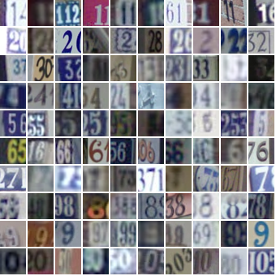
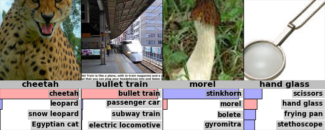
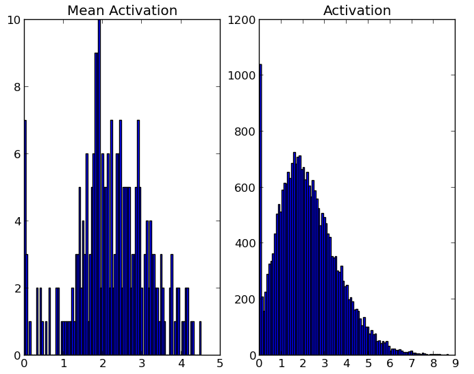
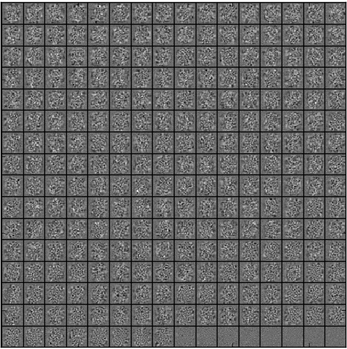
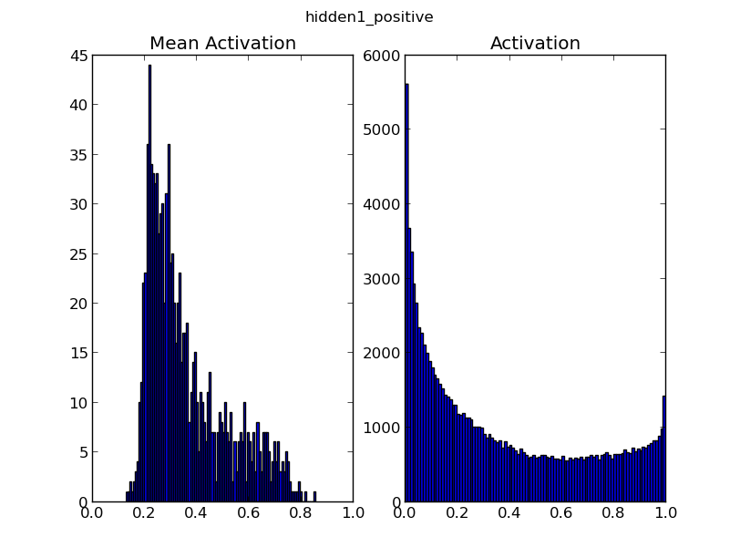

Dropout: a simple way to prevent neural networks from overfitting

| Architecture Type | Universal Regularization Component |
|---|---|
| Key Innovation | Random unit suppression during training with weight scaling at inference |
| Performance Metric | 0.79% test error on MNIST (permutation-invariant) |
| Computational Efficiency | O(1) overhead at test time; roughly 2-3x training time increase |
| Venue | Journal of machine learning research |
| Year | 2014 |
| Citations | 42812 |
| DOI | Link |
Dropout: A Simple Way to Prevent Neural Networks from Overfitting introduces a foundational regularization technique designed to mitigate the problem of overfitting in deep neural networks by randomly removing units and their connections during training. This process effectively samples from an exponential number of "thinned" architectures that share weights, providing a computationally efficient approximation of model averaging. The method achieved significant performance gains across multiple domains, most notably reducing the error rate on the MNIST dataset to a then-state-of-the-art 0.79% when combined with Deep Boltzmann Machine pretraining.
Stochastic Thinning and Weight Sharing

The core mechanism of dropout involves the temporary removal of a unit from the network, including all its incoming and outgoing connections, based on a fixed probability $p$. In a neural network with $n$ units, this process can be viewed as sampling a "thinned" network from a collection of $2^n$ possible sub-architectures. During training, a new thinned network is sampled for each presentation of a training case. Because all these sub-networks share the same underlying weight parameters, the total number of parameters remains $O(n^2)$ or less, preventing the parameter explosion typically associated with ensemble methods Figure 1.
This approach simulates training an ensemble of an exponential number of models that are highly constrained by weight sharing. While most of these thinned networks are trained very rarely—or perhaps not at all—the shared weights ensure that the collective knowledge of all sampled architectures is distilled into a single set of parameters. This prevents units from relying on the presence of specific other units, thereby reducing complex co-adaptations.
Inference via Weight Scaling Approximation

At test time, it is computationally infeasible to explicitly average the predictions of $2^n$ models. The authors propose a simple deterministic approximation: using a single neural network without dropout but with scaled-down weights. If a unit is retained with probability $p$ during training, its outgoing weights are multiplied by $p$ at test time Figure 2.
This scaling ensures that the expected output of any hidden unit at test time is the same as its expected output during the training phase (under the dropout distribution). This "weight scaling" procedure allows the model to approximate the geometric mean of the predictions of the exponential number of thinned models. Empirical results show that this approximation is highly effective, leading to lower generalization errors than other regularization methods like L2 weight decay or early stopping.
Biological Motivation: The Role of Sex in Evolution
The authors draw a parallel between dropout and the theory of the role of sex in evolution. While asexual reproduction can be seen as a way to pass on a successful, highly optimized set of genes directly, sexual reproduction breaks up these co-adapted sets of genes. One theory suggests that sexual reproduction favors "mix-ability"—the ability of a gene to work well with a random set of other genes. This makes the individual genes more robust and less reliant on specific partners.
Similarly, dropout forces each hidden unit in a neural network to be useful in the context of a randomly chosen sample of other units. This drives the units to learn robust features that do not rely on other units to correct their mistakes. This prevents "conspiracies" where units co-adapt to fix specific errors in the training set that do not generalize to the test data.
Regularization through Feature Robustness and Sparsity

Dropout has a profound effect on the internal representations learned by the network. In standard networks, units often develop highly correlated activations to minimize training loss, a phenomenon known as co-adaptation. Dropout breaks these correlations, forcing units to learn more independent and salient features. Visualization of features learned on MNIST shows that units trained with dropout develop clearer, more distinct edge-like detectors compared to the noisier features learned by standard autoencoders [[Figure 3, Figure 5]].
Furthermore, dropout encourages sparsity in the hidden layer activations. Analysis of the activation histograms reveals that in a network trained with dropout, a large number of units have zero or near-zero activations for any given input, while the remaining units have highly varied and informative responses [[Figure 4, Figure 6]]. This sparse representation is a byproduct of the requirement that each unit be individually capable of contributing to the final prediction.
Practical Considerations and Max-Norm Constraint
The authors suggest that dropout is most effective when combined with specific hyperparameter choices. A key recommendation is the use of "max-norm regularization," which constrains the L2-norm of the incoming weight vector for each unit to be upper-bounded by a constant $c$. This constraint prevents weights from blowing up when using large learning rates, which are often necessary to allow the model to explore the weight space effectively despite the noise introduced by dropout.
Typical values for the retention probability $p$ are $0.5$ for hidden units and $0.8$ for input units. The authors also note that while dropout increases training time (often by a factor of 2 to 3), the resulting models are significantly more robust. For very large datasets like ImageNet, dropout was found to be essential in preventing the massive fully connected layers from overfitting.
Concept Breakdown
A sub-architecture sampled from the parent network by removing units and their connections based on a Bernoulli mask.
A state where hidden units in a neural network become highly dependent on each other, often leading to overfitting on training noise.
The technique of multiplying weights by the retention probability $p$ at test time to match the expected output during training.
A constraint that limits the norm of the weight vector incident to each neuron, used to stabilize training with high learning rates.
The ability of a component (gene or neuron) to function effectively when paired with a random subset of other components.
Mathematics
Standard Feed-Forward Layer
| Symbol | Meaning |
|---|---|
| $z_i^{(l+1)}$ | Input to unit $i$ in layer $l+1$ before activation |
| $\mathbf{y}^{(l)}$ | Vector of outputs from layer $l$ |
| $f$ | Activation function (e.g., Sigmoid or ReLU) |
Dropout Training Operation
| Symbol | Meaning |
|---|---|
| $r_j^{(l)}$ | Binary mask bit for unit $j$ in layer $l$ |
| $p$ | Retention probability (probability that a unit stays active) |
| $*$ | Element-wise (Hadamard) product |
Test Time Weight Scaling
| Symbol | Meaning |
|---|---|
| $W_{\text{test}}$ | The weight matrix used during inference |
| $p$ | The probability of retention used during training |
Figures and Explanations
Contrast between a standard dense neural network and a 'thinned' network. The thinned network is produced by randomly removing nodes (and their associated edges), representing one of the $2^n$ possible sub-models trained during dropout.
Operational difference between training and test time. At training, units are present with probability $p$. At test time, all units are present, but their weights are scaled by $p$ to ensure the expected output remains constant.

Visualization of features learned on MNIST by one-hidden-layer autoencoders. Features learned with dropout are sharper and more identifiable as strokes or edges compared to the more distributed and noisy features of a standard autoencoder.
Sparsity histograms for ReLU units. The left plot shows that dropout leads to a much larger number of zero activations (sparsity) compared to a standard network, indicating that dropout encourages a more efficient coding of information.
Features learned by Restricted Boltzmann Machines (RBMs) on MNIST. Similar to the autoencoder case, dropout RBMs learn cleaner, more localized features that represent meaningful parts of the digits.

Activation histograms for RBMs, demonstrating that the sparsity-inducing effect of dropout is consistent across different types of architectures and generative models.